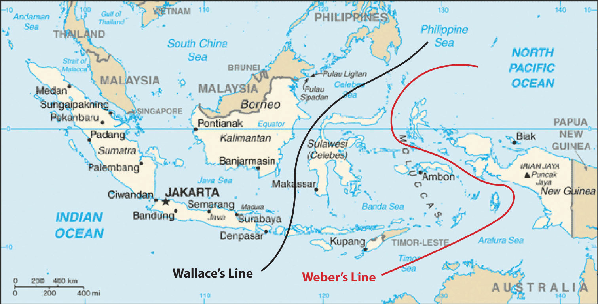
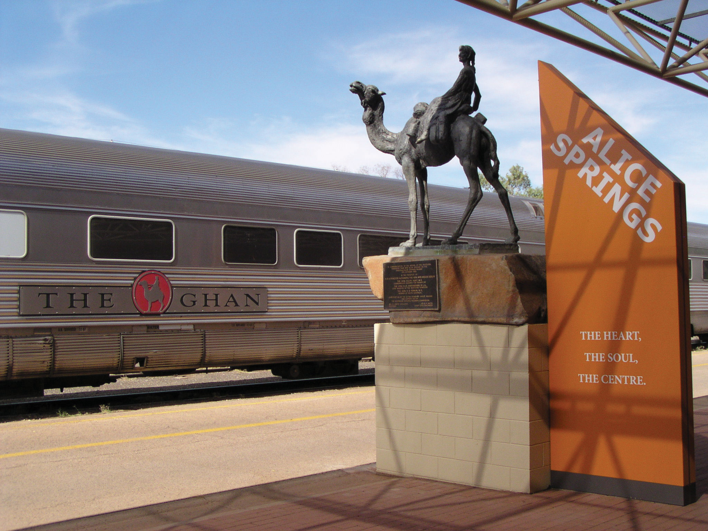
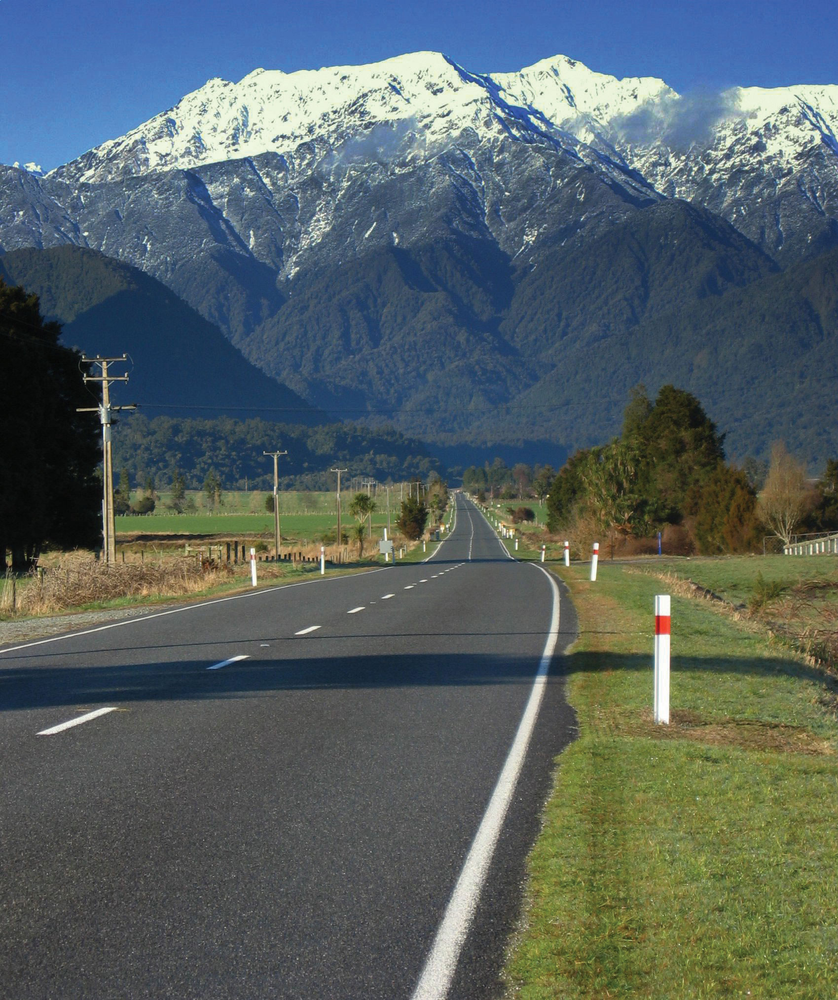

At a Glance
At a Glance
🎯 Learning Outcomes
- Understand: Describe the unique biogeography (marsupials, eucalyptus) due to isolation.
- Analyze: Distinguish the cultural and physical differences between Melanesia, Micronesia, and Polynesia.
- Analyze: Examine the impact of colonization on Aboriginal and Maori peoples.
- Evaluate: Assess the existential threat of sea-level rise to low-lying atolls.
- Apply: Apply the concept of the "Tyranny of Distance" to economic development.
🔑 Key Terms
Biogeography, Outback, Atoll, Aborigines, Maori, EEZ (Exclusive Economic Zone), Great Barrier Reef, Wallace's Line.
🛑 Stop & Check
Reveal Answer
⚡ Common Misconception
Myth: Australia is entirely desert.
Fact: While the vast interior ("Outback") is arid, the coastal fringes—especially the East and Southwest—have temperate and tropical climates where 85% of the population lives.
ðŸï¸ Regional Profile
ðŸ—ºï¸ Interactive Map: Australia and Oceania
Physical Geography
A Unique Biogeography
Isolated for millions of years, Australia developed a unique flora and fauna found nowhere else on Earth. The continent is dry, flat, and ancient, while New Zealand is young, mountainous, and geologically active.
- Biogeography: Wallace's Line and Weber's Line mark the boundary between Asian and Australian species, a fundamental concept in evolutionary biology.
- The Outback: The vast, arid interior of Australia, known for its red soil and iconic landmarks like Uluru.
- Island Types: The Pacific Islands are classified as high islands (volcanic, fertile) or low islands (coral atolls, vulnerable to sea-level rise).




🌐 Human Geography and Adaptation
From the ancient traditions of Aboriginal Australians to the diverse cultures of the Pacific, the region is defined by its people's connection to the land and sea.

🌐 Global Theme: Climate Change Frontline
The Pacific Islands are tragic barometers for climate change. Rising sea levels urge nations like Kiribati to plan for a future where their land may no longer exist.
In Australia, the impact is seen in shifting agricultural zones and intensifying bushfires.

💬 Discussion & Reflection Prompts
Reflect on Your Learning
- Biogeography & Isolation: How has geographic isolation shaped unique ecosystems in Australia and the Pacific? What threats do these ecosystems face today?
- Island Vulnerability: Why are Pacific Island nations at existential risk from climate change? What ethical obligations do wealthy nations have?
- Indigenous Rights: How does geographic knowledge of Aboriginal peoples and Pacific Islanders offer insights for sustainable land management?
Discuss With Your Peers
- What does justice look like for island nations facing climate displacement?
- How can Australia and Pacific nations adapt to rising sea levels while maintaining cultural identity?
- What role should Indigenous peoples play in environmental policy and conservation?
- Outback
- The vast, remote, and arid interior of Australia.
- Atoll
- A ring-shaped coral reef including a coral rim that encircles a lagoon.
- EEZ
- Exclusive Economic Zone, a sea zone prescribed by the UN over which a state has special rights regarding marine resources.
- Biogeography
- The study of the distribution of species and ecosystems in geographic space and through geological time.
- Geographic isolation has led to unique ecosystems that are highly vulnerable to invasive species.
- Climate change poses an existential threat to low-lying Pacific Island nations.
- Indigenous rights and land management are central to the region's modern political discourse.
Sinking Islands: Climate Refugees and National Sovereignty
Kiribati, Tuvalu, and the Marshall Islands are among the world's lowest-lying nations — their highest points barely 2 meters above sea level. Rising seas are already contaminating freshwater supplies, eroding coastlines, and making some islands uninhabitable. These nations face a question no country has ever faced before: what happens to a nation when its land disappears?
🏝️ Role A: Kiribati Government
You have already purchased land in Fiji as a potential relocation site. But your people don't want to leave — their identity, culture, and ancestral connections are tied to these islands. You demand that major carbon-emitting nations pay for the damage they caused and fund your adaptation efforts.
🇦🇺 Role B: Australia
You are the region's largest economy and a major coal exporter. You have offered limited climate aid but resist binding emissions targets. You face pressure to accept Pacific climate refugees but worry about setting a precedent for mass migration.
🇳🇿 Role C: New Zealand
You have created a special visa category for Pacific climate migrants. You see yourself as a Pacific nation with obligations to your neighbors. You want Australia to do more and support stronger international climate finance mechanisms.
🌐 Role D: UN Climate Negotiator
You must address an unprecedented legal question: if a nation's territory disappears, does it retain its UN seat, its EEZ fishing rights, and its international legal status? You must propose a framework for "stateless nations" that the international community can accept.
📊 Data Exploration: Sea Level Rise Threat Index
The following chart shows the average elevation (in meters above sea level) of Pacific Island nations compared to projected sea level rise by 2100 under a high-emissions scenario (~1 meter). Nations whose average elevation approaches or falls below this threshold face existential risk.
Interpretation: The red dashed line represents the projected 1-meter sea level rise by 2100. Nations below or near this line face the loss of habitable land. How does this data change your perspective on international climate negotiations?
✅ Knowledge Check
Loading quiz questions...
📊 Curriculum Standards Alignment
This chapter aligns with the following National and State geography standards.